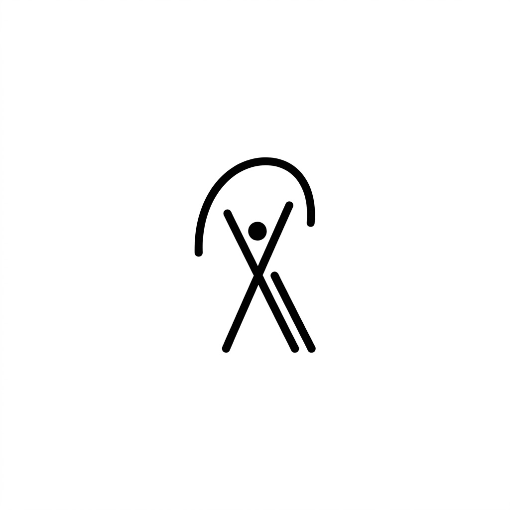

Rakathon 2026 · Motol & Homolka
AvicennaKnow the best trial.
AI trial matching for oncology — when the stakes are highest.
Rakathon 2026 · Motol & Homolka
AI trial matching for oncology — when the stakes are highest.
Challenge #1 · AI Trial Matching
The belief
In the most difficult situations — when everything is on the line — that is usually a clinical trial.
The promise
Even when the journey through treatment is hard. Finding the right trial should not be.
That is why we built Avicenna
As we speak, it holds trial data across Prague, Brno, Ostrava, the Czech Republic, Germany, Italy, Europe — and the rest of the world.
The problem with the catalog
We built a matching engine on InterSystems technology — so comparison happens without confidential patient data ever leaving hospital servers.
How matching reads
Not a black-box score. Each inclusion and exclusion resolves to met, not met, or data missing — with the protocol text still visible.
Live path
Avicenna
Know the best clinical trial for your patient.

FN Motol · Homolka · InterSystems IRIS · Rakathon 2026